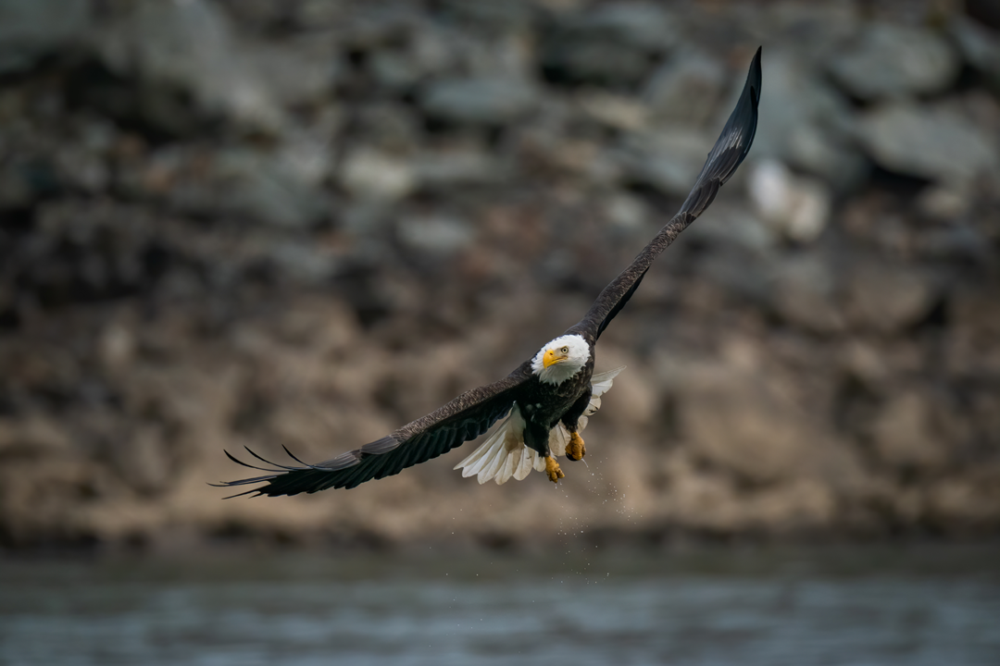

O Mundo das Águias 🦅
Conhecendo as Águias
As águias são aves de rapina conhecidas por sua força, velocidade e capacidade de caça. Elas pertencem à família Accipitridae e podem ser encontradas em diferentes regiões do mundo. Com suas grandes asas, garras poderosas e bico curvo, as águias possuem características especialmente adaptadas para a caça e a sobrevivência na natureza.
Uma visão extraordinária
A visão é uma das características mais impressionantes das águias. Seus olhos são altamente desenvolvidos e permitem identificar movimentos e possíveis presas a grandes distâncias. Essa capacidade é fundamental para uma ave que passa boa parte do tempo observando o ambiente enquanto voa.
O poder do voo
As asas das águias permitem que elas voem e planem por grandes distâncias. Aproveitando as correntes de ar, algumas espécies conseguem permanecer no céu durante bastante tempo sem gastar tanta energia. Durante o voo, elas podem observar o território em busca de alimento e também utilizar sua velocidade para realizar ataques rápidos.
Garras e bico
As garras, chamadas de talões, são fortes e afiadas. Elas são utilizadas principalmente para capturar e segurar as presas. O bico curvo e resistente também é uma importante ferramenta para alimentar-se e manipular alimentos.
Onde vivem?
As diferentes espécies de águias ocupam diversos ambientes, como:
- Montanhas
- Floresta
- Regiões costeiras
- Campos e áreas abertas
Cada espécie possui adaptações específicas para o ambiente em que vive.
Alimentação
A alimentação varia de acordo com a espécie e o local onde a águia vive. Algumas podem se alimentar de pequenos mamíferos e aves, enquanto outras possuem maior especialização para capturar peixes. Como predadoras, elas desempenham um papel importante na cadeia alimentar e contribuem para o equilíbrio dos ecossistemas.
Reprodução e cuidados
As águias geralmente constroem grandes ninhos em locais elevados, como árvores, penhascos ou outras estruturas adequadas. Os filhotes permanecem sob os cuidados dos pais durante uma fase importante do desenvolvimento, aprendendo gradualmente habilidades necessárias para sobreviver de forma independente.
Símbolo de força e liberdade
Além de sua importância ecológica, as águias possuem um forte significado cultural. Em diferentes sociedades, elas são associadas a conceitos como liberdade, coragem, força, liderança e determinação. Sua capacidade de voar alto e dominar grandes territórios ajudou a transformar essas aves em símbolos presentes em bandeiras, brasões e diversas representações culturais.
Preservação
A conservação das águias depende da proteção dos ambientes onde elas vivem. A destruição de habitats, a redução de alimentos disponíveis e outras ações humanas podem representar ameaças para determinadas espécies. Proteger florestas, rios, montanhas e outras áreas naturais é uma maneira de contribuir para a preservação dessas incríveis aves.
